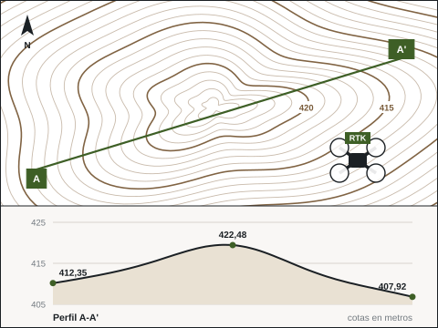

Medimos el terreno desde el aire.
Volamos con un DJI Mavic 3 con RTK. Cada foto lleva su posición corregida al centímetro, y de ellas salen ortofotos, modelos del terreno, curvas de nivel y nivelaciones. confirmar modelo exacto

Lo que le entregamos.
Ortofoto
Imagen aérea a escala, de pocos centímetros por píxel y con fecha de hoy.
Modelo digital del terreno
La forma del suelo en tres dimensiones, lista para medir.
Curvado de nivel
Curvas a la equidistancia que pida el trabajo, con sus cotas.
Nivelaciones y perfiles
Cotas, pendientes y perfiles longitudinales y transversales.
Mediciones
Superficies y distancias sobre el modelo, sin pisar la finca.
Por qué RTK.
Un dron normal sabe dónde está con un error de metros. Con RTK, la posición de cada foto se corrige en tiempo real y el error baja a centímetros.
- Menos puntos de apoyo en el suelo: el vuelo se georreferencia solo.
- Comprobado en campo con puntos de control medidos con GNSS.
- En el sistema oficial de coordenadas, listo para superponer al Catastro.
Cómo es un vuelo.
- PlanificarZona, resolución y solape, y los permisos del espacio aéreo.
- VolarPasadas automáticas, a la altura que pide la precisión.
- ProcesarFotogrametría: nube de puntos, modelo y ortofoto.
- ComprobarContra puntos medidos en el terreno.
- EntregarGeoTIFF, DXF, KML o PDF a escala.
El detalle que no da la ortofoto oficial.

Para qué se usa.
Fincas
Superficie real, linderos visibles y planos para segregar o repartir.
Catastro
Construcciones a fecha de hoy, para la teledetección de detalle.
Medio ambiente
El estado de una zona antes y después, para el seguimiento ambiental.
Explotaciones
Nivelaciones de parcelas, pendientes y desagües.
Vuelo legal.
Operador registrado en la Agencia Estatal de Seguridad Aérea, piloto con la formación exigida y seguro de responsabilidad civil. confirmar registro AESA y seguro
¿Qué terreno quiere medir?
Díganos dónde está, qué superficie tiene y para qué es. Le decimos qué precisión cabe, el plazo y el precio.
- emiliocontadorbrito@gmail.com
- Calle Matilde Tagle Ortiz, 28, 5.º D, 06006 Badajoz